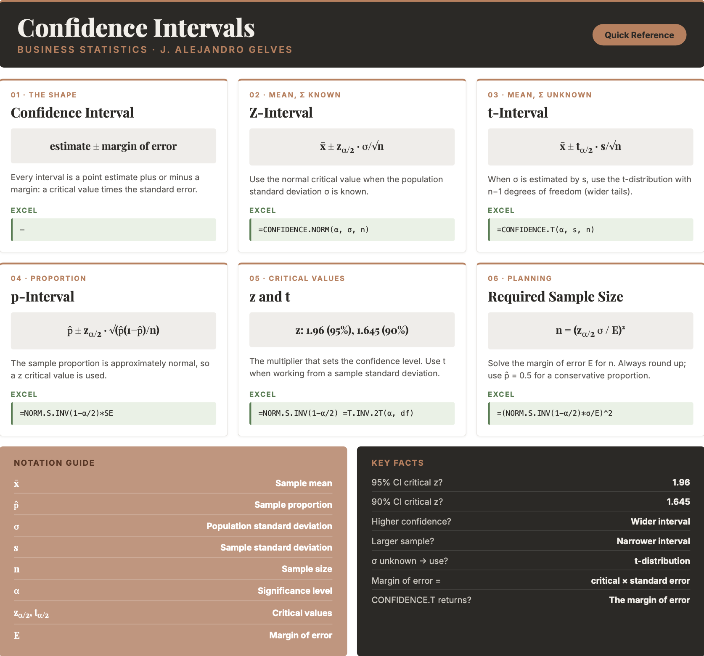

12 Inference II
A single number is rarely the whole story. When a business estimates average customer spending or the proportion of defective units from a sample, the estimate is almost never exactly right — it carries sampling error. Reporting a lone point estimate hides this uncertainty. Instead, we surround the estimate with a range of plausible values and attach a level of confidence to it. This chapter shows how to build these confidence intervals for means and proportions, how the sample size and confidence level affect their width, and how to construct them in Excel.
12.1 Confidence Intervals
A confidence interval (CI) is a range of plausible values for a population parameter, together with a confidence level that states how often the procedure captures the true parameter. A 95% confidence interval means that if we repeated the sampling process many times, about 95% of the intervals produced would contain the true population parameter.
The confidence level and the significance level \(\alpha\) are two sides of the same coin: a 95% confidence level corresponds to \(\alpha = 0.05\), the risk that the interval misses the parameter. Every confidence interval has the same shape — a point estimate plus or minus a margin of error:
THE CONFIDENCE INTERVAL \[\text{point estimate} \pm \text{margin of error}\] The margin of error is a critical value (from the normal or \(t\) distribution) multiplied by the standard error of the estimate.
Two forces control the width of the interval. A higher confidence level widens it (more certainty requires a bigger net), and a larger sample narrows it (more data gives a more precise estimate).
Note
A confidence interval describes the procedure, not a single interval. Once computed, a specific interval either contains the parameter or it does not — the 95% refers to how often the method succeeds over many samples.
12.2 Confidence Intervals for the Mean
When the population standard deviation \(\sigma\) is known and the sampling distribution is normal (by the Central Limit Theorem), the confidence interval for the mean uses a \(z\) critical value:
CONFIDENCE INTERVAL FOR THE MEAN (\(\sigma\) known) \[\bar{x} \pm z_{\alpha/2} \cdot \frac{\sigma}{\sqrt{n}}\] where \(\bar{x}\) is the sample mean, \(z_{\alpha/2}\) is the normal critical value (e.g., \(1.96\) for 95%), \(\sigma\) is the population standard deviation, and \(n\) is the sample size.
Example: A sample of \(n = 50\) gives an average life expectancy of \(\bar{x} = 78.1\) years, and the population standard deviation is \(\sigma = 4.5\). For a 90% confidence interval, \(z_{0.05} \approx 1.645\). The standard error is \[\frac{\sigma}{\sqrt{n}} = \frac{4.5}{\sqrt{50}} \approx 0.637\] so the interval is \[78.1 \pm 1.645 \times 0.637 \approx 78.1 \pm 1.05 = [77.05,\ 79.15]\] We are 90% confident that the true mean life expectancy is between \(77.05\) and \(79.15\) years.
12.3 The t-Distribution
In practice we almost never know the population standard deviation \(\sigma\). When we estimate it with the sample standard deviation \(s\), the extra uncertainty means the normal distribution is no longer exact. Instead we use the \(t\)-distribution, which is bell-shaped like the normal but has heavier tails. The \(t\)-distribution has one parameter, the degrees of freedom (\(n - 1\)); as the sample size grows, its tails thin out and it converges to the normal distribution.
CONFIDENCE INTERVAL FOR THE MEAN (\(\sigma\) unknown) \[\bar{x} \pm t_{\alpha/2} \cdot \frac{s}{\sqrt{n}}\] where \(s\) is the sample standard deviation and \(t_{\alpha/2}\) is the \(t\) critical value with \(n - 1\) degrees of freedom.
Example: A sample of \(n = 20\) customer wait times has a mean of \(\bar{x} = 8.4\) minutes and a sample standard deviation of \(s = 2.1\). For a 95% confidence interval with \(n - 1 = 19\) degrees of freedom, \(t_{0.025} \approx 2.093\). The margin of error is \[2.093 \times \frac{2.1}{\sqrt{20}} \approx 0.98\] so the interval is \(8.4 \pm 0.98 = [7.42,\ 9.38]\) minutes. Because we estimated \(\sigma\) from the sample, the \(t\) critical value (\(2.093\)) is slightly larger than the corresponding \(z\) value (\(1.96\)), making the interval a little wider.
12.4 Confidence Intervals for a Proportion
For a population proportion \(p\), the sample proportion \(\hat{p} = x/n\) is approximately normal by the Central Limit Theorem, so the interval uses a \(z\) critical value:
CONFIDENCE INTERVAL FOR A PROPORTION \[\hat{p} \pm z_{\alpha/2} \cdot \sqrt{\frac{\hat{p}(1-\hat{p})}{n}}\] where \(\hat{p}\) is the sample proportion and \(n\) is the sample size.
Example: A random sample of \(100\) yields \(40\) successes, so \(\hat{p} = 0.4\). For a 90% confidence interval, \(z_{0.05} \approx 1.645\). The standard error is \[\sqrt{\frac{0.4 \times 0.6}{100}} \approx 0.049\] so the interval is \[0.4 \pm 1.645 \times 0.049 \approx 0.4 \pm 0.081 = [0.319,\ 0.481]\] We are 90% confident that the true population proportion is between \(31.9\%\) and \(48.1\%\).
12.5 Determining the Sample Size
Because the margin of error shrinks as \(n\) grows, we can turn the question around: how large a sample do we need to achieve a desired margin of error \(E\)? Solving the margin-of-error expression for \(n\) gives:
REQUIRED SAMPLE SIZE \[\text{Mean:} \quad n = \left(\frac{z_{\alpha/2}\,\sigma}{E}\right)^2 \qquad\qquad \text{Proportion:} \quad n = \hat{p}(1-\hat{p})\left(\frac{z_{\alpha/2}}{E}\right)^2\] Always round \(n\) up to the next whole number. If \(\hat{p}\) is unknown, use \(\hat{p} = 0.5\) for the most conservative (largest) sample size.
Example: To estimate a mean within \(E = 2\) units at 95% confidence when \(\sigma = 10\): \[n = \left(\frac{1.96 \times 10}{2}\right)^2 = (9.8)^2 = 96.04 \rightarrow 97\] A sample of \(97\) observations is needed.
12.6 Confidence Intervals in Excel
Excel can produce the margin of error directly, so a confidence interval is just the sample mean plus or minus that margin.
Critical values. For a \(z\) critical value use =NORM.S.INV(1 - alpha/2) — for example, =NORM.S.INV(0.975) returns \(1.96\). For a \(t\) critical value use =T.INV.2T(alpha, deg_freedom), which returns the positive two-tailed value directly — for example, =T.INV.2T(0.05, 19) returns \(2.093\).
Margin of error for a mean. Excel has two dedicated functions that return the margin of error in one step. Use =CONFIDENCE.NORM(alpha, standard_dev, size) when \(\sigma\) is known, and =CONFIDENCE.T(alpha, standard_dev, size) when it is estimated by \(s\). The alpha argument is the significance level (0.05 for 95%).
=CONFIDENCE.T(0.05, 2.1, 20)This returns \(0.98\), the margin of error for the wait-time example. The interval is then =8.4 - 0.98 and =8.4 + 0.98.
Margin of error for a proportion. There is no dedicated function, so build it from the standard error:
=NORM.S.INV(1 - 0.05/2) * SQRT(0.4*(1-0.4)/100)This returns \(0.096\), the 95% margin of error for the proportion example.
12.7 Excel Function Summary
Below is a list of the Excel functions used in this section:
=CONFIDENCE.NORM(alpha, standard_dev, size)returns the margin of error for a mean using the normal distribution (when \(\sigma\) is known).=CONFIDENCE.T(alpha, standard_dev, size)returns the margin of error for a mean using the \(t\)-distribution (when \(\sigma\) is unknown).=NORM.S.INV(probability)returns a \(z\) critical value;=T.INV.2T(probability, deg_freedom)returns a two-tailed \(t\) critical value.=AVERAGE(range)and=STDEV.S(range)return the sample mean and sample standard deviation.
12.8 Chapter Summary Cheat Sheet
12.9 Exercises
The following exercises will help you test your knowledge of confidence intervals. In particular, the exercises work on:
- Simulating confidence intervals.
- Estimating confidence intervals for means using the \(t\)-distribution.
- Estimating confidence intervals for proportions.
Try not to peek at the answers until you have formulated your own answer and double checked your work for any mistakes.
Exercise 1
In this exercise you will simulate confidence intervals in Excel. The idea is to draw many samples, build a confidence interval around each one, and see how often the interval captures the population mean.
Using the exponential distribution with a rate of \(0.02\), generate \(10{,}000\) samples of size \(50\). Arrange the data so that each row is one sample. What are the population mean and standard deviation?
Answer
For an exponential distribution with rate \(\lambda = 0.02\), the mean and standard deviation are both \(1/\lambda = 50\). To draw an exponential value in Excel, transform a uniform random number:
=-LN(RAND())/0.02
Fill a block of \(10{,}000\) rows and \(50\) columns with this formula; each row is a sample of size \(50\). (The values recalculate on every edit — copy the block and use
Paste Special → Valuesto freeze them.)Compute the mean of each sample (each row). What are the mean and standard deviation of the \(10{,}000\) sample means?
Answer
In the column just after the data, average each row and copy the formula down all \(10{,}000\) rows:
=AVERAGE(A2:AX2)→ the mean of the first sample
Summarizing the \(10{,}000\) sample means:
=AVERAGE(...)→ about \(50\), matching the population mean=STDEV.S(...)→ about \(7.07\), which matches the standard error \(\sigma/\sqrt{n} = 50/\sqrt{50} \approx 7.07\)
Using the standard error from part 2, construct a \(90\%\) confidence interval around the first sample mean. Does it include the population mean of \(50\)?
Answer
With the standard error stored in a cell (call it
SE\(\approx 7.07\)), the limits are the sample mean plus or minus \(z_{0.05} \times SE\):=FirstMean - NORM.S.INV(0.95)*SE→ lower limit=FirstMean + NORM.S.INV(0.95)*SE→ upper limit
Because a typical sample mean sits near \(50\), the interval will usually contain the population mean. About \(90\%\) of such intervals do.
Build a \(90\%\) confidence interval around every sample mean and count how many include the population mean. About how many of the \(10{,}000\) intervals do you expect to succeed?
Answer
Rather than build \(10{,}000\) pairs of limits, note that an interval includes \(50\) exactly when the sample mean is within \(z_{0.05} \times SE\) of \(50\). Add a helper column:
=IF(ABS(SampleMean - 50) <= NORM.S.INV(0.95)*SE, 1, 0)
Copy it down and sum it with
=SUM(...). About \(9{,}000\) of the \(10{,}000\) intervals contain the population mean — that is exactly what a \(90\%\) confidence level means.
Exercise 2
A random sample of \(24\) observations is used to estimate the population mean. The sample mean is \(104.6\) and the standard deviation is \(28.8\). The population is normally distributed. Construct a \(90\%\) and a \(95\%\) confidence interval for the population mean. How does the confidence level affect the size of the interval?
Answer
The 90% interval is \([94.52,\ 114.68]\) and the 95% interval is \([92.44,\ 116.76]\). The higher the confidence level, the wider the interval.
Since \(\sigma\) is unknown, use the \(t\)-distribution.
CONFIDENCE.Treturns the margin of error directly:=CONFIDENCE.T(0.10, 28.8, 24)→ \(10.08\), so the 90% interval is \(104.6 \pm 10.08\)=CONFIDENCE.T(0.05, 28.8, 24)→ \(12.16\), so the 95% interval is \(104.6 \pm 12.16\)
A random sample from a normally distributed population yields a mean of \(48.68\) and a standard deviation of \(33.64\). Compute a \(95\%\) confidence interval assuming (a) the sample size is \(16\) and (b) the sample size is \(25\). What happens to the interval as the sample size increases?
Answer
The interval for \(n = 16\) is \([30.75,\ 66.61]\) and for \(n = 25\) is \([34.79,\ 62.57]\). As the sample size grows, the interval gets narrower and more precise.
In Excel:
=CONFIDENCE.T(0.05, 33.64, 16)→ \(17.93\), so the interval is \(48.68 \pm 17.93\)=CONFIDENCE.T(0.05, 33.64, 25)→ \(13.89\), so the interval is \(48.68 \pm 13.89\)
Exercise 3
You will need the sleep data set for this problem. It records the extra hours of sleep (extra) for ten students under each of two sleep-inducing drugs (group). Construct a \(95\%\) confidence interval for each group. Which drug appears more effective at increasing sleeping time?
Answer
The 95% interval for Group 1 is \([-0.53,\ 2.03]\) and for Group 2 is \([0.90,\ 3.76]\).
The data is sorted by group, so with extra in column A the ten Group 1 values are in A2:A11 and the ten Group 2 values in A12:A21. For each group, find the mean and the margin of error:
=AVERAGE(A2:A11)→ \(0.75\) for Group 1, and=AVERAGE(A12:A21)→ \(2.33\) for Group 2=CONFIDENCE.T(0.05, STDEV.S(A2:A11), 10)→ the margin of error, givingAVERAGE ± margin
(You can also get each group’s mean with =AVERAGEIF(B:B, "1", A:A).) Drug 2 appears more effective. Its interval lies entirely above zero, so it is unlikely to have no effect, and its mean increase in sleep is \(2.33\) hours, well above Drug 1’s \(0.75\) hours.
Exercise 4
A random sample of \(100\) observations results in \(40\) successes. Construct a \(90\%\) and a \(95\%\) confidence interval for the population proportion. Can we conclude at either confidence level that the population proportion differs from \(0.5\)?
Answer
The 90% interval is \([0.319,\ 0.481]\) and the 95% interval is \([0.304,\ 0.496]\). Neither includes \(0.5\), so at both levels we can conclude the population proportion differs from \(0.5\).
With \(\hat{p} = 0.4\) and \(n = 100\), the standard error is
=SQRT(0.4*0.6/100)\(= 0.049\). The margins of error are:=NORM.S.INV(0.95) * SQRT(0.4*0.6/100)→ \(0.081\), giving \(0.4 \pm 0.081\)=NORM.S.INV(0.975) * SQRT(0.4*0.6/100)→ \(0.096\), giving \(0.4 \pm 0.096\)
You will need the HairEyeColor data set for this problem. It records the hair and eye color of \(592\) statistics students. Construct a \(95\%\) confidence interval for the proportion of students with Hazel eyes.
Answer
The 95% confidence interval is \([0.128,\ 0.186]\).
The data is in tidy form with columns
Hair,Eye,Sex, andn(the count). Total the Hazel rows and divide by the overall total to get the sample proportion:=SUMIF(Eye_range, "Hazel", n_range)→ \(93\) Hazel-eyed students=SUM(n_range)→ \(592\) students, so \(\hat{p} = 93/592 = 0.157\)
Then the margin of error and interval are:
=NORM.S.INV(0.975) * SQRT(0.157*(1-0.157)/592)→ \(0.029\), giving \(0.157 \pm 0.029 = [0.128,\ 0.186]\)